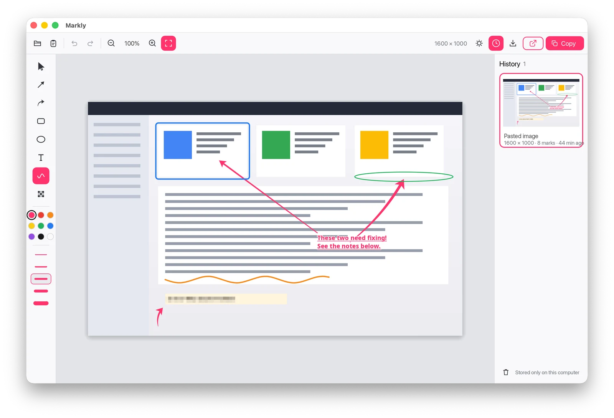

Paste. Annotate. Copy.
A small, fast image annotation app for macOS, Windows and Linux. Arrows, boxes, text and blur, and your work is saved automatically.

Paste and go
Paste with ⌘/Ctrl+V, drop a file, or open one. PNG, JPEG and WebP.
Clean annotations
Straight and curved arrows, boxes, ellipses, text, freehand and pixelation.
Always editable
Select, move, resize and recolour any mark. Undo and redo everything.
Copy at full size
⌘/Ctrl+C puts the annotated image on the clipboard at the original resolution.
Never lose work
Every image is autosaved and waits in the history panel next time.
Really redacts
Pixelation destroys the pixels underneath. Nothing can be recovered from the copy.
Install
- Download and unzip
Get the macOS zip. It is one universal app for Apple Silicon and Intel.
- Move Skrib.app to Applications
- Allow the first launch
The app is not notarised by Apple, so macOS blocks it the first time. Right-click Skrib.app and choose Open, or run:
xattr -dr com.apple.quarantine /Applications/Skrib.app
- Download and unzip
Get the Windows zip (x86_64) and extract it anywhere.
- Run skrib.exe
If SmartScreen warns about an unknown publisher, click More info, then Run anyway.
- Pin it
Pin it to the taskbar or Start, or make a shortcut. There is no installer and nothing else to set up.
- Download and unpack
Get the Linux archive (x86_64), then:
tar xzf skrib-*-linux-x86_64.tar.gz - Run it
./skrib - Add it to your app launcher
Puts Skrib with its icon in GNOME, KDE and other launchers. Run it again if you move the binary.
./skrib --install-desktop-entry
sudo apt install libxkbcommon0 libwayland-client0 libegl1 xdg-desktop-portalStays on your computer
No accounts, no cloud, no telemetry. Skrib never touches the network.